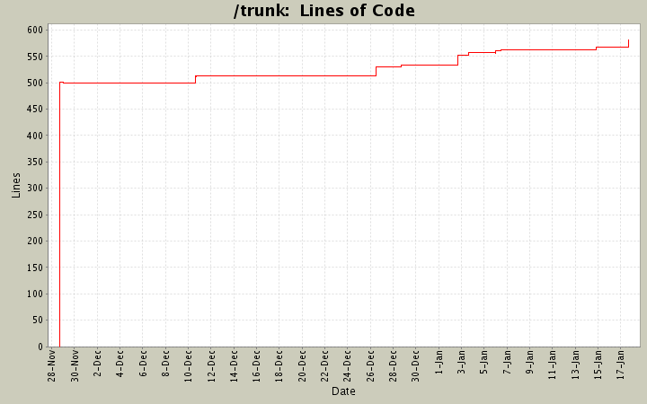

[root]
 bin
(3 files, 575 lines)
bin
(3 files, 575 lines)
 devel
(1 files, 3 lines)
devel
(1 files, 3 lines)
 doc
(4 files, 377 lines)
doc
(4 files, 377 lines)
 lib
(1 files, 176 lines)
lib
(1 files, 176 lines)
 sup
(17 files, 2915 lines)
sup
(17 files, 2915 lines)
 mbox
(3 files, 471 lines)
mbox
(3 files, 471 lines)
 modes
(18 files, 2054 lines)
modes
(18 files, 2054 lines)
 www
(2 files, 102 lines)
www
(2 files, 102 lines)

| Author | Changes | Lines of Code | Lines per Change |
|---|---|---|---|
| wmorgan | 27 (100.0%) | 684 (100.0%) | 25.3 |
added coding style guidelines
16 lines of code changed in:
added
4 lines of code changed in:
whoops, updated to 0.0.6
3 lines of code changed in:
updated for 0.0.5
5 lines of code changed in:
added UserGuide.txt
1 lines of code changed in:
updated to 0.0.4
1 lines of code changed in:
updated to 0.0.4
4 lines of code changed in:
added UserGuide.txt
1 lines of code changed in:
added net/ssh dependency
1 lines of code changed in:
capitalized name for future hoe announcements
1 lines of code changed in:
updated to make hoe happy
38 lines of code changed in:
documentation updates for 0.0.3
44 lines of code changed in:
added mbox+ssh support (though pretty lame at the moment)
also changed sup-impor to use highline
3 lines of code changed in:
made better!
23 lines of code changed in:
goddammit forgot imap.rb
1 lines of code changed in:
included source.rb
1 lines of code changed in:
guess i can't have newlines in there?
0 lines of code changed in:
updated for 0.0.2
9 lines of code changed in:
updates for 0.0.2
9 lines of code changed in:
more tweaks. can't stop!
18 lines of code changed in:
(1 more)